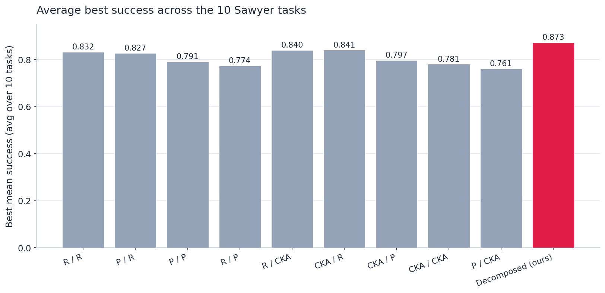
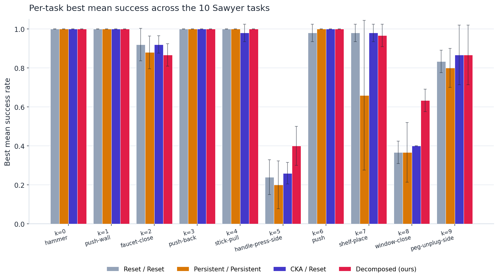
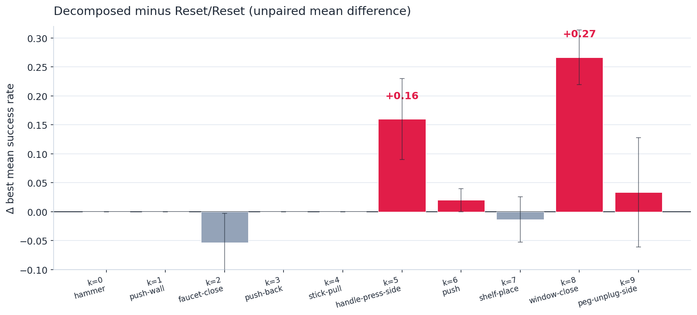
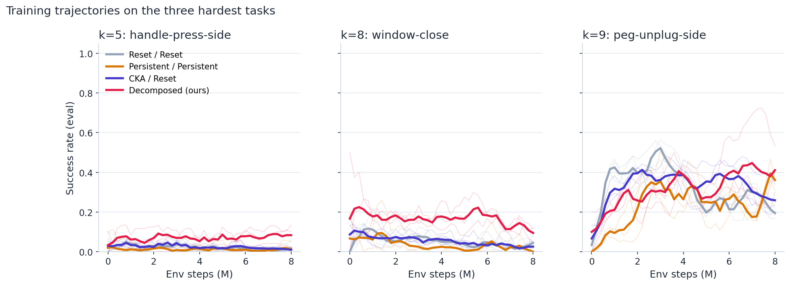

Continual Goal-Conditioned RL · Working Note · 2026-05-15
A small structural change to a contrastive critic — a shared body plus a per-task encoder, regularised by a masked-dynamics auxiliary — yields the strongest cell of a 9-cell ablation grid on the ten-task Continual World V2 Sawyer sequence.
A single agent must solve a sequence of K = 10 manipulation tasks under a curriculum, with the only learning signal being a terminal success indicator. No dense reward, no hand-shaped potential. Each task is seen for 8M environment steps and then the agent is advanced. The critic must carry enough representational structure across tasks for later tasks to be solvable; if the representation collapses, sparse rewards leave the agent with no gradient to recover.
Reward is delivered only at the end of an episode: r = 1 if the achieved state equals the commanded goal, 0 otherwise. Up to a factor of (1 − γ) this is equivalent to the discounted indicator that the next state equals the goal, which is what a contrastive goal-conditioned critic naturally models.
Most prior continual-RL benchmarks supply a dense per-step scalar that pulls representations towards each task's goal. Removing that crutch isolates the representation channel: an algorithm that survives a curriculum here is an algorithm whose representation carries genuine cross-task reachability information, not one that is buoyed by reward shaping.
Every prior method we compare against is one of nine cells: at each task boundary, the actor and the critic are each placed independently in one of three carryover modes — reset (reinitialise), persistent (carry forward unchanged), or CKA (the additive knowledge-vector decomposition adapted from prior continual-RL work). The reset/reset cell is the natural from-scratch baseline. None of the nine cells beats the from-scratch baseline by more than 0.01 on average best success; the persistent-critic family is consistently worse than starting from scratch.
We keep the actor in the reset mode of the 9-cell grid and modify only the critic. The state–action encoder of the contrastive critic is split into three pieces — a shared body, a small per-task encoder, and a dynamics head — with one auxiliary loss tying the body to a task-invariant subspace of the state.
The state–action representation is the sum of a body-and-head projection and a per-task residual:
A residual MLP of width 1024 and depth 4, shared across all tasks and carried forward unchanged at every task boundary. The body is the only continual transfer channel on the critic side. It is regularised by the masked-dynamics auxiliary below.
A small residual MLP of width 256 and depth 4 that produces a state-and-action-dependent additive contribution. Re-initialised at every task boundary. Unlike a state-independent linear mixture, its contribution varies with both s and a, so the gradient it carries through the downstream losses is not in their joint null space.
The body must be predictive of the components of the next state that are invariant across tasks. On the Sawyer manipulation sequence the natural choice is the four-dimensional end-effector pose plus the gripper, indexed by M = {0, 1, 2, 3}: those four coordinates are geometrically defined the same way no matter which task is current. A small dynamics head predicts them from the body's output and the squared error is added to the critic loss:
No task one-hot is supplied to any head: the body must learn shared dynamics without knowing which task is current.
Solid black: shared, carried forward across the task curriculum. Rose: re-initialised at every task boundary. Beige: losses. The state–action representation is the sum of h_φ(b_shared) and φ_task; the goal representation is ψ(g); the critic score is their inner product. The dynamics head trains the body alone on the masked-coordinate prediction.
Per task k, the agent alternates one episode of environment interaction with one inner gradient block. Every transition is hindsight-relabelled and fed to the contrastive critic; every gradient step on the critic is a step on L_NCE + μ·L_dyn. The actor follows the SAC dual-update entropy schedule and reads value only from the target critic. Task boundaries reset φ_task while preserving everything else.
T=500 steps.
lax.scan over Nsgd mini-batches: one gradient step on L_NCE + μ·L_dyn; one gradient step on the actor under the target critic.
φ_task, carry forward b_shared, h_φ, h_dyn, ψ. Reset replay buffer.
| Component | Role | At task boundary k → k+1 |
|---|---|---|
b_shared | shared state-action body (the transfer channel) | carried forward |
h_φ | linear projection to ℝ64 | carried forward |
h_dyn | dynamics head for the auxiliary | carried forward |
ψ | goal encoder | carried forward |
φ_task | per-task additive residual on (s, a) | re-initialised |
| actor | πθ(a | s, g) | re-initialised (same as the 9-cell reset mode) |
| replay buffer | per-task transitions for HER + InfoNCE | cleared |
The construction is implemented in JAX + Haiku on top of JaxGCRL. Live in the project repository on the section3_done branch:
contrastive/decomposed_networks.py — the b_shared / h_φ / h_dyn / φ_task construction.contrastive/continual_learning_decomposed.py — the inner-loop trainer.run_continual_contrastive.py — the curriculum runner; --critic_mode=decomposed activates this cell.experiment_configs.py + DRAFT.sh, draft_3.sh, draft_4.sh — SLURM-side cell sweep.results/scripts/{fetch_wandb_runs,compute_metrics,render_plots}.py — the reproducible analysis pipeline the figures on this page are built from.With every cell scored on its best mean success per task and then averaged across the ten tasks, the proposed decomposed critic is the strongest cell of the grid by a margin larger than the spread of the other nine cells.

for_real; CKA-actor cells pool 4–5 seeds from real1+real2; the decomposed cell pools 3 seeds from C2: decomposed single-cell sanity.The gain over the from-scratch baseline is concentrated on the three hardest tasks of the sequence: handle-press-side (k=5), window-close (k=8), and peg-unplug-side (k=9). Easy tasks (k=0,1,3,4,6) are at ceiling for every cell.


This is the complete numerical record for the four cells highlighted above. The full 10-cell table is in results/tables/per_task_table.md.
| k | task | Reset/Reset | Persistent/Persistent | CKA/Reset | Decomposed (ours) |
|---|---|---|---|---|---|
| 0 | hammer | 1.000 ± 0.000 | 1.000 ± 0.000 | 1.000 ± 0.000 | 1.000 ± 0.000 |
| 1 | push-wall | 1.000 ± 0.000 | 1.000 ± 0.000 | 1.000 ± 0.000 | 1.000 ± 0.000 |
| 2 | faucet-close | 0.920 ± 0.084 | 0.880 ± 0.084 | 0.920 ± 0.045 | 0.867 ± 0.058 |
| 3 | push-back | 1.000 ± 0.000 | 1.000 ± 0.000 | 1.000 ± 0.000 | 1.000 ± 0.000 |
| 4 | stick-pull | 1.000 ± 0.000 | 1.000 ± 0.000 | 0.980 ± 0.045 | 1.000 ± 0.000 |
| 5 | handle-press-side | 0.240 ± 0.089 | 0.200 ± 0.122 | 0.260 ± 0.055 | 0.400 ± 0.100 |
| 6 | push | 0.980 ± 0.045 | 1.000 ± 0.000 | 1.000 ± 0.000 | 1.000 ± 0.000 |
| 7 | shelf-place | 0.980 ± 0.045 | 0.660 ± 0.385 | 0.980 ± 0.045 | 0.967 ± 0.058 |
| 8 | window-close | 0.367 ± 0.058 | 0.367 ± 0.153 | 0.400 ± 0.000 | 0.633 ± 0.058 |
| 9 | peg-unplug-side | 0.833 ± 0.058 | 0.800 ± 0.100 | 0.867 ± 0.153 | 0.867 ± 0.153 |
| avg best (over 10 tasks) | 0.832 | 0.791 | 0.841 | 0.873 | |
| seeds (median) | 5 | 5 | 5 | 3 | |
Each cell shows best mean success: the max over the per-step evaluator/success_rate trajectory during training of that task, averaged across seeds. Standard deviation is sample standard deviation across seeds. Highlighted rows are the three hardest tasks. Decomposed seeds (5, 6, 7) do not overlap with the GCRL-cell seeds (97–101), so paired forward-transfer numbers are not directly comparable; we report the unpaired mean difference instead.
The per-task best is an end-of-trajectory summary; the trajectories show how the policy gets there. On the two tasks where the decomposed critic wins, it does so by maintaining a higher success rate across the entire 8M-step training window, not just spiking at the end.

window-close (k=8), where the previous-best cell (CKA / Reset) is essentially at the from-scratch baseline. On handle-press-side (k=5) the absolute level is low for every cell, but the decomposed cell stays consistently above the others. On peg-unplug-side (k=9) the four cells converge to ≈ 0.4 success.window-close trajectory does not collapse: the previous-best baselines sit near 0.05 from the start of the task, while the decomposed cell holds 0.15–0.20 across the full 8M steps.
The decomposed-critic numbers are from 3 seeds (5, 6, 7) in the W&B group C2: decomposed single-cell sanity. The 9-cell baselines are from 4–5 seeds (97–101 and re-runs) in for_real + real1 + real2. Seeds do not overlap between the two pools, so forward transfer is reported as an unpaired mean difference rather than a paired one. Five-seed runs for the proposed cell are queued; the camera-ready will report tighter intervals.
None of the runs that feed this page were launched with cross-task evaluation enabled (intra_eval_previous_tasks = False), so we cannot directly compute classical backward transfer or catastrophic forgetting. What we report instead is a within-task stability ratio (end / best) per cell, which sits at ≈ 0.48 for every cell — including ours. A proper backward-transfer pass is on the camera-ready list.
All decomposed-critic numbers on this page are at μ = 1, phi_task_width = 256, phi_task_depth = 4, masked indices M = {0, 1, 2, 3}. We have not yet swept any of these. A small ablation cell dyn_aux_after_task0 = 0 (keep the auxiliary only at task 0, where the body's masked-dynamics loss converges) is queued to test whether the auxiliary is acting as a one-shot initialiser or as a continual regulariser.
This is one curriculum on one robot (Sawyer 7-DoF arm), one task family (manipulation), one observation modality (state-based). The geometric argument for why a state-and-action-dependent residual outperforms a state-independent additive mixture is benchmark-agnostic, but the empirical claim of "+0.04 avg best, +0.27 on window-close" is specific to this curriculum.
For the formal write-up and the broader 9-cell story see the workshop submission at Okyumi/CGCRL---RLC-workshop-2026. The code lives at Okyumi/sgcrl on the section3_done branch; the analysis pipeline that produced every number and every figure on this page is in results/.